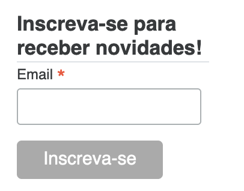

O que é a R-Ladies São Paulo?
A R-Ladies São Paulo é uma comunidade que iniciou em 2018, e desde então buscamos promover a diversidade de gênero na comunidade da linguagem R: organizando eventos presenciais e online, tirando dúvidas no nosso grupo do telegram, disponibilizando os materiais utilizados nos eventos, entre outros.
Caso queira saber mais, consulte a página Sobre a R-Ladies São Paulo.

Por que um blog?
Ter um site/blog é uma forma de facilitar a divulgar o conteúdo que produzimos, além de ser uma forma de incentivar as pessoas da comunidade a compartilharem seus conhecimentos por aqui também! Essa é uma vontade que as pessoas da comunidade expressaram algumas vezes no passado: já discutimos anteriormente sobre criar um blog das R-Ladies na América Latina (R-Ladies LATAM) e a ideia foi liderada pela Bruna Wundervald, uma das co-organizadoras da R-Ladies São Paulo na época (em janeiro de 2019); em junho de 2021 a ideia voltou para criar um blog para a comunidade em São Paulo, mas infelizmente nenhuma dessas versões chegou a ser utilizada e divulgada.
A volta dos eventos presenciais (em novembro de 2022) foi um impulso para voltar a trabalhar na criação de um blog para a comunidade!
Posso contribuir com o blog?
Sim! Começamos a preparar uma página com informações para pessoas que queiram enviar seus textos por aqui: Como contribuir com o blog?. Também é possível contribuir sugerindo novos conteúdos, avisando caso tenha alguma informação desatualizada, entre outros.
Inscreva-se para receber novidades
Neste blog, existe um formulário simples para inscrição do seu email, caso queira receber as novidades! O formulário se encontra na coluna à direita do texto principal, e se parece com a imagem a seguir:

O que esperar?
A ideia é que este seja um espaço onde as pessoas da comunidade R-Ladies possam publicar textos relacionados à atuação da comunidade, programação em R, ciência de dados e muito mais.

Esperamos que seja um lugar rico de troca e compartilhamento! Até logo!